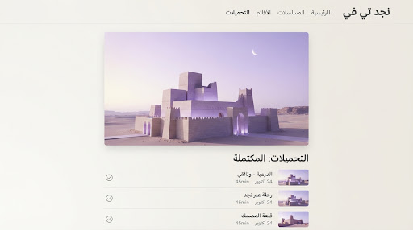
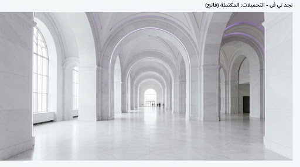
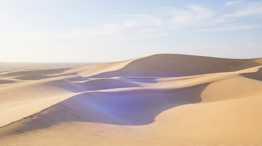
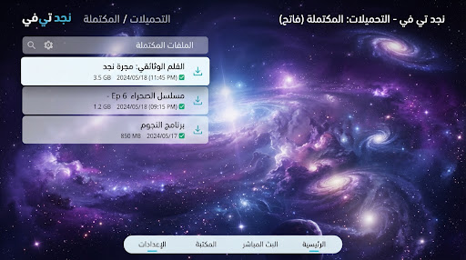
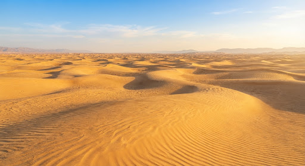

مسلسلفرسان الظلال
حلقتان · 1.2 جيجابايت
مكتمل

الحلقة 1: البداية
48 دقيقة · 580 م.ب

الحلقة 2: المعبر
52 دقيقة · 620 م.ب
المستهلك 3.6 جيجابايت من 128 جيجابايت

مسلسلحلقتان · 1.2 جيجابايت

48 دقيقة · 580 م.ب

52 دقيقة · 620 م.ب

4Kساعتان و 10 دقائق · 1.8 جيجابايت

HDRساعة و 15 دقيقة · 740 م.ب